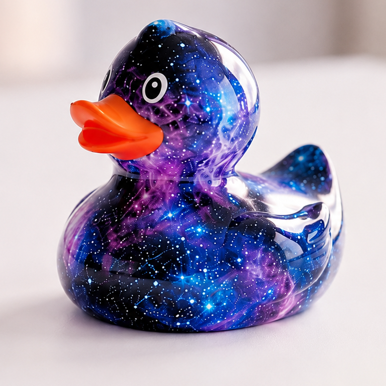

Pato Galáctico
24,99 €
Ilumina tu bañera con nuestra edición limitada intergaláctica. Este patito no solo flota con gracia celestial, sino que absorbe la luz para revelar constelaciones brillantes en la oscuridad. Perfecto para navegantes nocturnos y soñadores estelares.
task_alt
En stock y listo para enviar